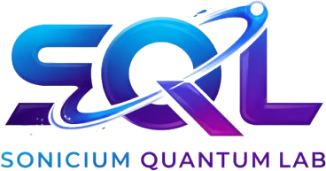

Sonicium Entropy{ "register": "Q135",
"drbgAlgorithm": "CTR-DRBG-AES-256",
"entropySource": "superconducting_qubit_q135",
"healthCheck": { "rct": "passed", "apt": "passed" } }
# server-side only — never in a browser, mobile app or public repo SONICIUM_API_KEY="YOUR_SONICIUM_API_KEY"
$ curl -sS --max-time 10 \ "https://api.soniciumentropy.com/v1/random?length=32&format=hex" \ -H "Authorization: Bearer $SONICIUM_API_KEY"
{
"data": "4cc5673986cbff63e4c2a4b28df98d4c1978319fbfd305dccc4bcd7c8e74e56a",
"length": 32, "format": "hex", "register": "Q135",
"drbgAlgorithm": "CTR-DRBG-AES-256",
"healthCheck": { "rct": "passed", "apt": "passed", "excludedChannels": [] },
"seedId": "…", "sourceJobIds": ["…"],
"servedAt": "2026-10-12T09:30:00.000Z"
}
| HTTP | ||
|---|---|---|
| 401 | ||
| 429 | ||
| 429 | ||
| 503 | ||
| 502 | ||
| 413 | ||
| — |